<div id="smo-container" class="wrapper">
  <mat-sidenav-container *ngIf = "this.router.url !== '/'">
    <mat-sidenav #sidenav mode="side" opened class="example-sidenav"
    [fixedInViewport]="options.value.fixed" [fixedTopGap]="options.value.top"
    [fixedBottomGap]="options.value.bottom">
    <div [ngClass]="{'left-hightlight': selectedMenu === '1'}" class="align-self-center highlighter">
    </div>
    <div class="dashboard" (click) = "selectMenu('1')" >
      
    </div>
    <div [ngClass]="{'left-hightlight': selectedMenu === '2'}" class="align-self-center highlighter">
    </div>
    <div class="flag"  (click) = "selectMenu('2')">
      
    </div>
    <div class="log-out"  (click) = "selectMenu('3')">
      
    </div>
   
  </mat-sidenav>
    <mat-sidenav-content>
      
    </mat-sidenav-content>
  </mat-sidenav-container>
  <router-outlet></router-outlet>
</div>

